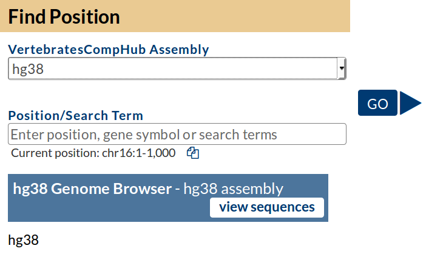
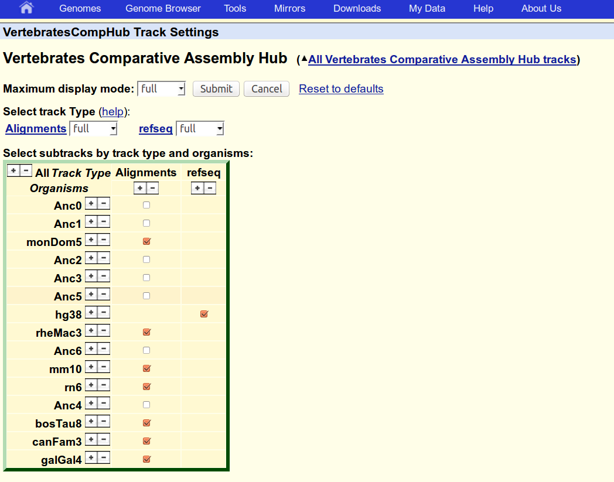

Navigate to Lab Session on AUGUSTUS.
Using Scipio.
Training AUGUSTUS.
AUGUSTUS-PPX.
Creating a Whole-Genome-Alignment with progressiveCactus
This tutorial describes how a whole-genome alignment of multiple genomes can be created with the Cactus aligner.
The output alignment is a compressed file in HAL format that can be exported as MAF.
1. Running progressive Cactus
Prepare a text file with the species tree followed by a space-separated list of species names and location of
the corresponding genome fasta files (absolute path names required!).
[+]
file format...
tree in Newick format
name_of_genome_1 absolute/path/to/genome_1
name_of_genome_2 absolute/path/to/genome_2
...
name_of_genome_N absolute/path/to/genome_N
For furter information and optional parameters, read the
progressiveCactus manual
cp tree.nwk vertebrates.txt
for f in $PWD/genomes/*.fa; do echo -ne "$(basename $f .fa)\t$f\n"; done >>vertebrates.txt
The file vertebrates.txt will now look like this (except for the parent directory)
((monDom5:0.340786,(((hg38:0.035974,rheMac3:0.043601):0.109934,(mm10:0.084509,rn6:0.091589):0.271974):0.020593,(bosTau8:0.18908,canFam3:0
.13303):0.032898):0.258392):0.181168,galGal4:0.559442);
bosTau8 /var/www/augustus/htdocs/binaries/tutorial-cgp/data/genomes/bosTau8.fa
canFam3 /var/www/augustus/htdocs/binaries/tutorial-cgp/data/genomes/canFam3.fa
galGal4 /var/www/augustus/htdocs/binaries/tutorial-cgp/data/genomes/galGal4.fa
hg38 /var/www/augustus/htdocs/binaries/tutorial-cgp/data/genomes/hg38.fa
mm10 /var/www/augustus/htdocs/binaries/tutorial-cgp/data/genomes/mm10.fa
monDom5 /var/www/augustus/htdocs/binaries/tutorial-cgp/data/genomes/monDom5.fa
rheMac3 /var/www/augustus/htdocs/binaries/tutorial-cgp/data/genomes/rheMac3.fa
rn6 /var/www/augustus/htdocs/binaries/tutorial-cgp/data/genomes/rn6.fa
Run progressiveCactus, e.g. using 8 threads (~12min):
runProgressiveCactus.sh vertebrates.txt cactusout vertebrates.hal --maxThreads=8 2>&1 > cactus.out
This creates a .hal binary indexed alignment file vertebrates.hal
2. Export HAL alignment as MAF
Next, we will export the HAL alignment as MAF. Observe, that the MAF format is reference-based, i.e. alignments
can only be represented with respect to some reference species. Generally any species can be chosen as reference.
We recommend, however, to choose a reference species that 1.) has a high-quality genome assembly and 2.) is placed somewhere
in the middle of the clade, e.g. in our case human (hg38). For parallelization of the gene prediction step,
we recommend to split the global alignmnent into several overlapping alignment chunks. This can be achieved with hal2maf_split.pl using
the parameters --chunksize that specifies the maximum chunk size (number of bases covered in the reference genome) and
--overlap that specifies the amount of overlap (number of bases) between two consecutive chunks.
Observe that hal2maf_split.pl works on top of the HAL tools toolbox, which is also part of the progressiveCactus package.
If the progressiveCactus/submodules/hal/bin directory in is not in your global PATH, use the parameter --hal_exec_dir to point to the directory
Export vertebrates.hal as MAF
hal2maf_split.pl --halfile vertebrates.hal --refGenome hg38 --cpus 8 --chunksize 50000 --overlap 25000 --outdir mafs
This will generate the directory mafs/ that
contains the output alignment chunks in MAF format
-rw-r--r-- 1 stefanie bioinf 392K May 24 19:43 chr16.0-49999.maf
-rw-r--r-- 1 stefanie bioinf 307K May 24 19:43 chr16.100000-149999.maf
-rw-r--r-- 1 stefanie bioinf 365K May 24 19:43 chr16.125000-174999.maf
-rw-r--r-- 1 stefanie bioinf 586K May 24 19:43 chr16.150000-199999.maf
-rw-r--r-- 1 stefanie bioinf 395K May 24 19:43 chr16.175000-210154.maf
-rw-r--r-- 1 stefanie bioinf 345K May 24 19:43 chr16.25000-74999.maf
-rw-r--r-- 1 stefanie bioinf 408K May 24 19:43 chr16.50000-99999.maf
-rw-r--r-- 1 stefanie bioinf 418K May 24 19:43 chr16.75000-124999.maf
For demonstration purposes, we chose very small values for the chunk size and overlap.
In a more realistic setting, i.e. when working with whole-genome alignments,
we recommend a chunk size in the megabase order, e.g. --chunksize=2500000 and --overlap=500000 (default values).
[+]
avoid splitting within genes...
Gene prediction errors may occur from splitting of the alignment within genes. The smaller the chunk size
is chosen, the more likely genes are truncated at alignment boundaries. To avoid this,
a list of genic regions/intervals may be passed to
hal2maf_split.pl. In this case, the splitting is
restricted to intergenic regions, e.g. position outside of the given intervals. The genic intervals can be obtained
from existing annotations for the reference species, if available.
Use the hg38 RefSeq annotation
refseq/refseq.hg38.gtf to create a text file with a list of genic intervals, in which the splitting is forbidden.
Each genic interval is specified as follows:
seqname <tab> start <tab> end <newline>
gtf2gff.pl --printIntron <refseq/refseq.hg38.gtf --out=/dev/stdout | cut -f 1,4,5 >no_split_list.txt
If your annotation is in gtf format as in the example, don't forget to include the intron lines!
Rerun hal2maf_split.pl using the parameter
--no_split_list to pass
no_split_list.txt
hal2maf_split.pl --halfile vertebrates.hal --refGenome hg38 --cpus 8 \
--chunksize 50000 --overlap 25000 --no_split_list no_split_list.txt --outdir mafs_good_split
This will generate the directory
mafs_good_split/ that
contains the following MAF alignments
-rw-r--r-- 1 stefanie bioinf 707K May 25 18:17 chr16.0-91311.maf
-rw-r--r-- 1 stefanie bioinf 442K May 25 18:17 chr16.173067-210154.maf
-rw-r--r-- 1 stefanie bioinf 913K May 25 18:17 chr16.45035-173067.maf
-rw-r--r-- 1 stefanie bioinf 1013K May 25 18:17 chr16.91311-207894.maf
Observe that when using the
--no_split_list option, the maximum chunk size is not always respected.
Let's assume you already have a vetted whole-genome alignment in MAF format.
You can split it similarily to HAL alignments into overlapping alignment chunks.
Let
hg38 be the reference genome in
aln.maf.
REF="hg38"
Create a tab-separated list of reference chromosomes/scaffolds of and their lengths
grep "^s $REF" aln.maf | perl -ne '@a=split(/\s+/,$_); $a[1]=~s/.*\.//; print "$a[1]\t$a[5]\n";' | sort -u >seqlist
Cut aln.maf into overlapping pieces with the auxiliary tool
filterMaf.pl from the
scripts/ folder in the Augustus package.
mkdir mafs
CHUNKSIZE=2500000
OVERLAP=500000
cat seqlist | while read line
do
SEQ=$(echo "$line" | cut -f 1)
CHRLEN=$(echo "$line" | cut -f 2)
for ((start=0; start<CHRLEN; start+=(CHUNKSIZE-OVERLAP))); do
end=$((start+CHUNKSIZE))
if [ $end -ge $CHRLEN ]; then
end=$CHRLEN
fi
filterMaf.pl --interval=${REF}.${SEQ}:$start-$end <aln.maf >mafs/${SEQ}:$start-$end.maf
done
done
3. Build a comparative assembly hub
hal2assemblyHub.py vertebrates.hal vertHub --lod \
--alignability --gcContent \
--hub vertCompHub --shortLabel VertebratesCompHub \
--maxThreads=10 --longLabel "Vertebrates Comparative Assembly Hub"
Manually edit the .html files in the vertHub/ directory, if desired.
4. Load the hub and browse the alignment
Copy the vertHub/ directory to a web directory:
scp -r vertHub/ stefanie@greifweb1:/var/www/bioinf/htdocs/stefanie/cgp-tutorial/
Go to the UCSC Genome Browser Track Data Hubs page and paste your hub.txt url into the "My Hubs" tab.
Select a species as reference (e.g. hg38) and click "Go".

5. Upload a reference annotation to the hub
Convert the hg38 RefSeq annotation to BED format and place it in a folder with the name of the genome
mkdir refseq/hg38
gtf2bed.pl <refseq/refseq.hg38.gtf >refseq/hg38/refseq.bed --itemRgb=25,25,112
Specify any RGB color you like for the track with option --itemRgb, e.g. 25,25,112.
Rerun the hal2assemblyHub.py script. Include gene tracks with option --bedDirs.
rm -r jobTree # delete job data from previous run
hal2assemblyHub.py vertebrates.hal vertHub --lod \
--alignability --gcContent \
--hub vertCompHub --shortLabel VertebratesCompHub \
--bedDirs refseq \
--tabBed \
--maxThreads=10 --longLabel "Vertebrates Comparative Assembly Hub"
For further information on the specification of parameter --bedDirs, read section 'Annotations provided by users' in the assemblyHub manual.
[+]
hal2assemblyHub troubleshooting...
If the
hal2assemblyHub.py script returns immediately without error message. Delete the jobTree folder and rerun it again.
rm -r jobtree
Make sure that all auxiliary tools, e.g
hgGcPercent, are in the global path. If not export
export PATH=/home/stefanie/tools/progressiveCactus/bin:/home/stefanie/tools/progressiveCactus/submodules/kentToolBinaries:$PATH
export PYTHONPATH=/home/stefanie/tools/progressiveCactus/submodules:$PYTHONPATH
Repeat 4. Load the hub and browser the alignment.
The new track, should be visible in the 'VertebratesCompHub Track Settings' menu, enable it if necessary.
